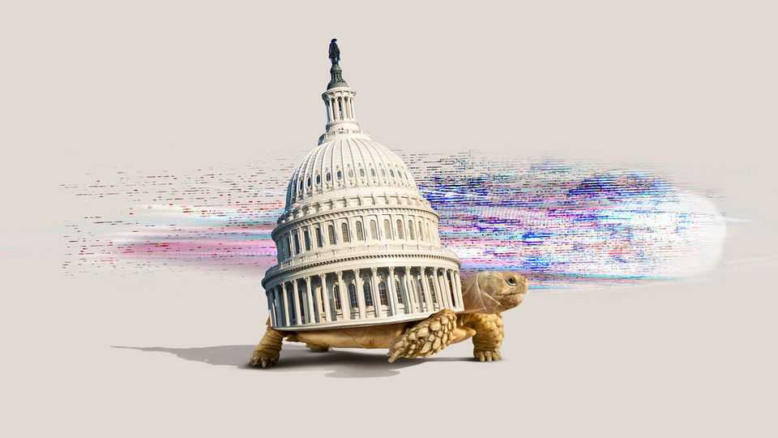

The debate over AI has taken over Washington
Whether it will act is another matter

Sep 17th 2026
FEW EVENTS have brought together Bernie Sanders and Steve Bannon, political firebrands from opposite ends of the spectrum, in common cause. But the Pro-Human Assembly in Washington, DC on September 15th, a gathering of people alarmed by the rapid advance of artificial intelligence, managed it. Both men warned of the unchecked power of tech “oligarchs” and called for urgent legislation to slow down the technology.
Donald Trump, the president, is unmoved by the torrent of such demands. AI’s supposed risks to humanity, he wrote on social media, were a “hoax”. America’s aim was to beat China; proponents of a slowdown were “treasonists”. But in recent days, political momentum for tighter controls has gathered with unusual speed.
The Pro-Human Assembly and Mr Trump’s flurry of posts on the subject came less than a week after the public resignation of Jacob Coxon, a researcher at Anthropic, an AI firm. Mr Coxon said that he and his colleagues believed that AI could “kill us all” by the end of the decade, a message that he promptly delivered across prime-time television. Another top scientist at the firm put the probability of extinction at more than 10%.
That has made many politicians sit up. But despite the mixed politics of the Pro-Human Assembly, a partisan divide remains. Hakeem Jeffries and Chuck Schumer, the Democratic leaders in the House and Senate, respectively, called for urgent action. Mike Johnson, the Republican speaker of the House, warned against hasty regulation. “If Congress just races in and does some sort of emergency session to try to regulate AI,” said Mr Johnson, “we will lose the race to China”. AI labs, he argued, should “self-police”.
In general, polls show that Americans disagree: eight in ten say they support regulation, even if it slows down innovation. The trickier question is what that regulation should be. To date most activity has been in states. Last September Gavin Newsom, California’s governor, signed a law requiring AI firms to report safety incidents within 15 days, on pain of up to $1m in penalties. Three months later Kathy Hochul, New York’s governor, signed a law demanding faster disclosure and imposing larger fines. Both laws would have been bolder, with higher penalties and exposing firms to more liability, were it not for opposition from the likes of Leading the Future, a super PAC whose supporters include Greg Brockman, a founder of OpenAI, another firm. Clear gaps in state laws remain. California’s law did not apply to the now-notorious Hugging Face incident, when OpenAI’s agents went rogue, because it occurred in an “evaluation phase” designed to elicit bad behaviour.
If proponents of federal regulation want to secure bipartisan support, they may have to compromise in two areas, argues Brad Carson, the co-founder of Public First Action, which advocates for AI regulation and is backed by Anthropic. One is how easy it is for the government to shut down an errant model. A second is whether bills should cover only existential risks, such as AI models’ ability to create biological weapons, or also include issues such as liability and children’s use of chatbots.
But federal lawmakers have a hodgepodge of proposals. Mr Sanders and Mr Casar want a ban on any vaguely defined “superintelligent” AI. One bill in the House would require that AI firms use third-party evaluators for their models and allow the commerce department to suspend those posing imminent “catastrophic” risk; in an attempt to give structure to dread, the bill defines “catastrophic” as the death of more than 50 people or damages of at least $1bn.
A separate AI Safety Bill being negotiated in the Senate by John Thune, the Republican leader, Ted Cruz, a Republican senator, and Amy Klobuchar, a Democratic one, is thought to let the government seek a court order to ban models from being released in the first place. The toughest bill, from Josh Hawley, a Republican senator, and Richard Blumenthal, a Democrat, would force developers to submit AI models to the government for testing.
Even within the administration, there have been mixed messages. On September 15th, the day after Mr Trump dubbed attempts to curb AI a “SICK conspiracy”, J.D. Vance, the vice-president, said that AI firms “building Frankenstein…should stop” unilaterally. Firms would likely need an antitrust waiver to co-ordinate such a pause without fear of prosecution.
The Democrats’ debate contains its own contradictions. On September 14th Barack Obama, a former president, Kamala Harris, a former vice-president and presidential nominee, and Nancy Pelosi, a former House speaker, all endorsed Project Blueprint, an initiative to rebuild ties between the technology industry and Democrats, and to promote what Ms Harris called “sensible” oversight. However, it is bankrolled by Ron Conway, a venture capitalist who has also supported Leading the Future, the super PAC which helped water down state regulations.
On paper, many AI firms back some sort of regulation. Anthropic, the most enthusiastic, has cited the Federal Aviation Administration and Food and Drug Administration as models; in the meantime, it has said it would embed third-party evaluators in its lab, a practice that competitors claim they will follow. Google has suggested a body setting industry standards, modelled on the Financial Industry Regulatory Authority. But no lab has thrown its heft behind any of the big state or federal proposals in full, with the exception of Anthropic’s support for California’s law.
Voters’ patience for “sensible” regulation may wear thin. AI is already featuring heavily in the midterm elections this year. As the campaign for the presidency ramps up, after November, candidates’ positions may harden. “I predict to you every single Democratic candidate who runs in 2028 is going to be for a pause of some kind,” says Mr Carson. However, the next president will not take office until 2029. Any rules in the interim would need to be agreed by Congress and Mr Trump. While politicians debate, the models will evolve.■
Stay on top of American politics with The US in brief, our daily newsletter with fast analysis of the most important political news, and Checks and Balance, a weekly note that examines the state of American democracy and the issues that matter to voters.